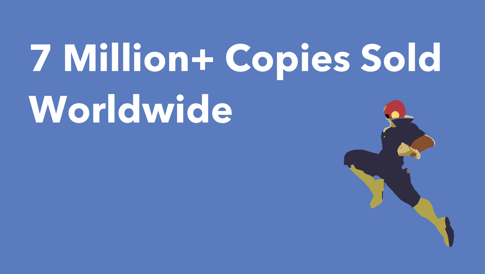
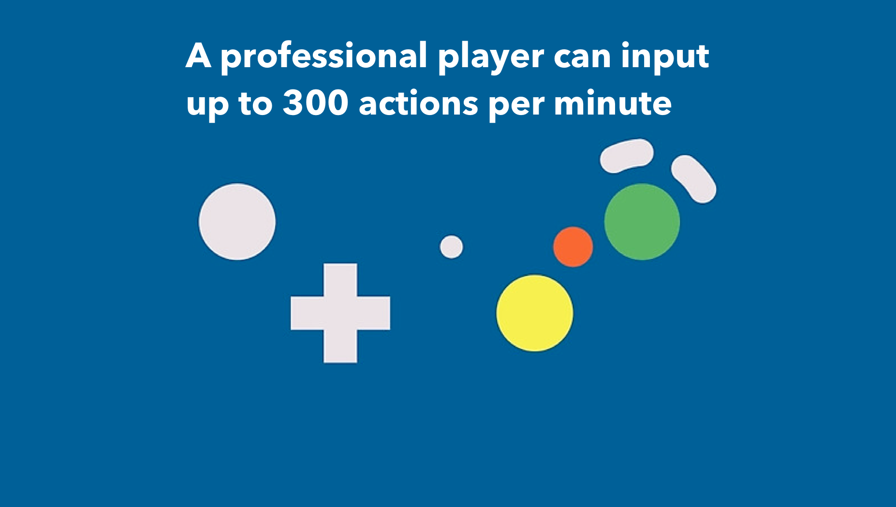
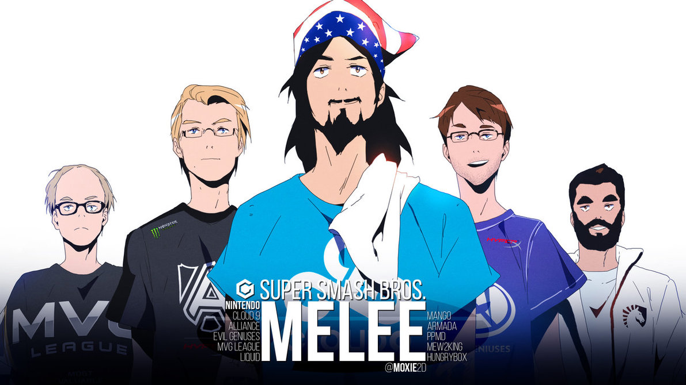
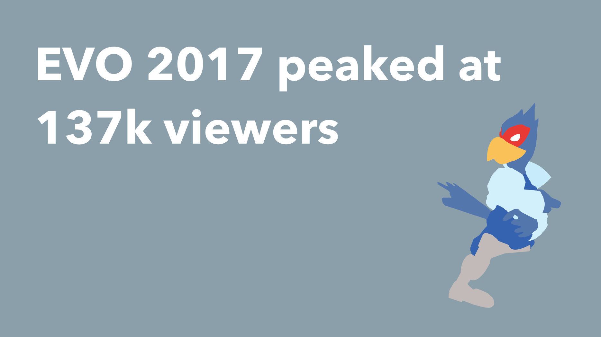

Table of Contents
A ‘Party’ GameA Passionate Playerbase
The Tournament Scene
The Narrative
Streaming and Social Media

Super Smash Bros. Melee: The 17 Year-Old Active eSport
A Brief History and Discussion
A ‘Party’ Game
Masahro Sakurai, the father of *Melee, put Nintendo’s beloved characters from across their franchises into one all-star arena. He had a vision of a couch-party, family-fun game: one where you can be Pikachu and beat up Grandpa on Mario. And it was an amazing casual game. Anyone could pick up a controller and have a good time.
It didn’t however, completely pan out how Sakurai had imagined. There were intricacies rooted in the game that allowed it to become more competitive than Nintendo or Sakurai could have ever imagined. Players unpacked this game’s potential to the fullest, discovering gameplay techniques that the designers didn’t intentionally include in the game. This highly contributed to it’s viewability as a game. When the audience can understand and digest what is going on in a professional match, it makes it that much more exciting when that player pulls off something really impressive. It is often called a sandbox fighting game, since it feels like the depth of gameplay is an open world, seemingly endless when it comes to comboniations and attacks. Each player, professional or not, has their own style with their main character, cementing Melee one of the deepest competitive games. Truly a beautiful accident.
A Passionate Playerbase
In a time where there was no online gameplay, no game streaming, there was a sapling of a community that formed around a passion for this GameCube game. Built upon a competitive drive and trash talk, a forum started gaining traction known as Smashboards. It was here that players would challenge each other, share opinions regarding characters and the state of the game, and share their feats. Rivalries, crews, and the battles to become the best fostered a highly competitive nature, ramping up the skill level of the players very fast. This was the humble beginning of what would soon become Melee tournaments with thousands of participants.
The Tournament Scene
In 2002, not too long after the games release, the community was holding state-wide tournmanents, often in just player’s own homes. This grew for a while until Melee was
then added to the Major League Gaming Circuit, and was played as an official game in all MLG tournaments. This lasted for sometime, but due to poor management, and the release of Melee’s
sequel, Super Smash Bros. Brawl, it seemed to be the end of Melee in 2008.

With the Melee playerbase in a massive slump, no interest from Nintendo to support the professional scene, and a new Smash game, it seemed over for Melee.
Interestingly, Sakurai designed the successor to Melee to be less competitive: it was a slower-paced game, less combonation attacks, and more party-oriented
with the addition of a campaign. This did not sit well with the orignial Melee players, and they soon deviated back to their go-to game. Players are more driven than ever
to improve and break the boundaries of the game. New tecniques are discovered, strong players come to the top, and we enter what is known as the Golden Era of Melee.
It’s called that because during the time the game was exclusively domniated by the Five Gods of Melee (pictured above).

In 2013, EVO(the largest gaming tournament) accepts Melee back as a game, which then becomes the largest Melee tournament of all time. From then on the attedance grew every year,
with various huge tournaments popping up, till today. With prize pools of $50,000, team and company sponsorships, it suddenly became pretty lucrative to be a professional Melee player. 
(can have more data regarding tournaments, perhaps a timeline of tournaments throughout the history)
The Narrative
- discuss the story between the five gods and how the drama helped keep the scene afloat
Streaming and Social Media
- describe the effect of streaming and youtube on melee’s popularity
- additionally how social media presence created a sense of fame for certain players and perpetuated the narratives